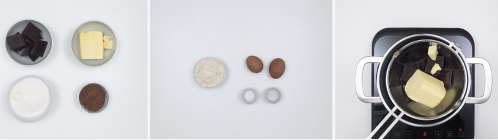
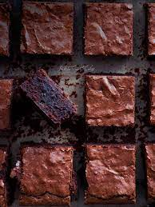

Los brownies son unos de los postres mas deseados para fiestas o celebraciones
especiales, son sencillos y
rapidos de hacer para cualquier ocasion.
Ingredientes
200 g. de mantequilla
180 g. de chocolate negro 70% mínimo (la marca que más os guste)
2 huevos L
225 g de azúcar normal
30 g. cacao en polvo sin azúcar
½ cdita. esencia de vainilla
120 g de harina de trigo
50 g. de nueces troceadas

Preparacion de los Brownies
Derretimos el chocolate troceado y la mantequilla a baño maría. Debemos ir removiendo en todo momento
hasta conseguir una crema homogénea. Para hacer el baño maría, pondríamos una cazuela al fuego con agua
y encima otra cazuela de forma que no toque el fondo.
Si no podemos hacer un baño maría en casa, podemos derretir el chocolate con la mantequilla en el
microondas. Calentaríamos el chocolate con la mantequilla durante 2 minutos, retiraríamos, y
removeríamos. Repetiríamos la operación varias veces hasta conseguir una mezcla lisa y brillante.
Dejaremos que la mezcla de chocolate y mantequilla se temple para continuar el proceso de preparación
del brownie de chocolate. Reservamos.
En un cuenco batimos los dos huevos con el azúcar, la esencia de vainilla y el punto de sal.
Cuando tengamos una crema espumosa la añadimos al chocolate que tenemos reservado y templado. Iremos
añadiendo los huevos poco a poco, integrándolos con el chocolate con la ayuda de unas varillas.
Incorporamos el cacao sin azúcar y la harina. Mezclamos con las varillas para integrar estos sólidos en
la mezcla.

Preparacion y Horneado del brownie
Engrasamos un molde de unos 20 x 20 cm. y lo forramos con papel de horno. Vertemos la mezcla del brownie
y golpeamos ligeramente para regular la superficie.
Precalentamos el horno a 170º C con calor por arriba y por abajo, sin la opción de ventilador. Horneamos
el brownie durante 40 minutos.
Cuando lleve ya 20 minutos en el horno tapamos con un poco de papel de aluminio para que no se queme la
superficie y la costra quede perfecta y crujiente.
Recordad que el brownie no debe queda crudo ni muy seco, tiene que tener un equilibrio. Por lo que debe
hornearse en su justa medida. Es importante conocer vuestro horno. Os recomiendo pincharlo casi al final
con un cuchillo y que salga con un poco de miga pegada. Esto no significa que esté crudo, ya que al
sacarlo es tal el calor que mantiene dentro que seguirá cociendo.
Lo dejamos enfriar en el molde unos 15 minutos, que baje su temperatura, sobre una rejilla. Cuando esté
frío lo cortamos en varias porciones. Vuestros trozos listos para comer y disfrutar de vuestro brownie
preferido.
Esta receta fue copiada dela
pagina:https://www.recetasderechupete.com/receta-de-brownies-de-chocolate-con-nueces-forma-clasica-y-facil/1220/